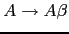
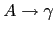
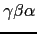
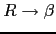
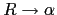
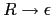
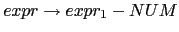
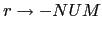

|
|
{ alpha_action } |
|  | { beta_action } |
|  | { gamma_action } |
para una sentencia como  la secuencia de acciones será:
gamma_action beta_action alpha_action
¿Cómo construir un esquema de traducción para la gramática resultante de eliminar la recursión por la izquierda que ejecute las acciones asociadas en el mismo orden?. Supongamos para simplificar, que las acciones no dependen de atributos ni computan atributos, sino que actúan sobre variables globales. En tal caso, la siguiente ubicación de las acciones da lugar a que se ejecuten en el mismo orden:
{ gamma_action } |

{ beta_action } |

{ alpha_action } |
|  |
Si hay atributos en juego, la estrategia para construir un esquema de traducción equivalente para la gramática resultante de eliminar la recursividad por la izquierda se complica. Consideremos de nuevo el esquema de traducción de infijo a postfijo de expresiones aritméticas de restas:
|  | { $expr{T} = $expr[1]{T}." ".$NUM{VAL}." - "} |
|
|
{ $expr{T} = $NUM{VAL} } |
En este caso introducimos un atributo H para los nodos de la clase
 el cuál
acumula la traducción a postfijo hasta el momento. Observe como
este atributo se computa en un nodo
el cuál
acumula la traducción a postfijo hasta el momento. Observe como
este atributo se computa en un nodo  a partir del
correspondiente atributo del el padre y/o de los hermanos del nodo:
a partir del
correspondiente atributo del el padre y/o de los hermanos del nodo:

{ $r{H} = $NUM{VAL} } 
{ $expr{T} = $r{T} }

{ $r_1{H} = $r{H}." ".$NUM{VAL}." - " } 
{ $r{T} = $r_1{T} }

{ $r{T} = $r{H} }
El atributo H es un ejemplo de atributo heredado.